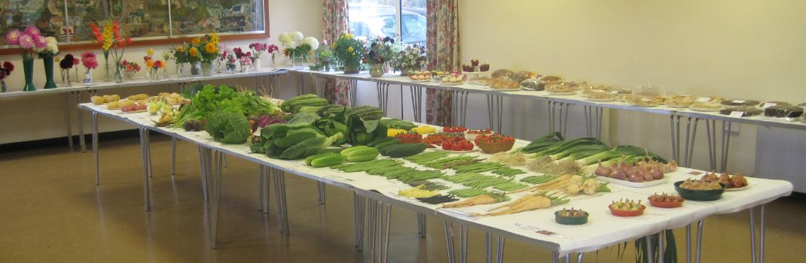

Souldern Horticultural Society's main purpose is to encourage and support residents of Souldern to grow and enjoy their own produce. The Society and its members also contribute to the social life of the village.
It is open to all residents of Souldern, Fritwell and Ardley with Fewcott.
You do not have to be a horticultural specialist to join, but just be interested in growing your own vegetables, fruit or flowers; in fact most members are DIY gardeners.
Membership is currently £3 a year.
For further information, please visit the Society's pages using the menu above or the table of contents at the end of this page.
Annual Show in August

Annual Cheese and Wine in January